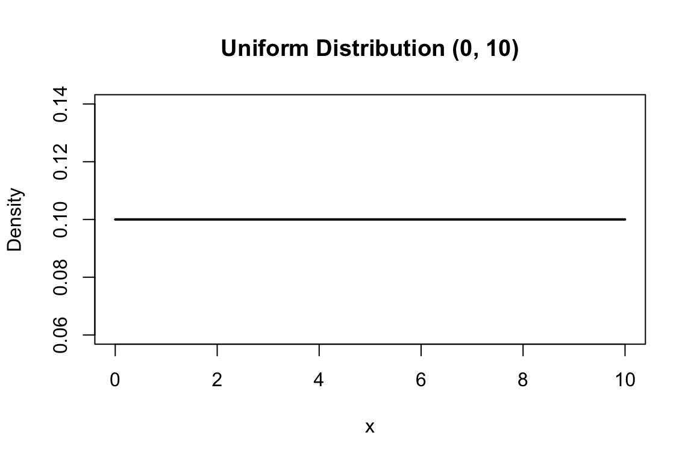

Code
# Uniform distribution between 0 and 10
x <- seq(0, 10, length.out = 100)
plot(x, dunif(x, min = 0, max = 10), type = "l", lwd = 2,
xlab = "x", ylab = "Density",
main = "Uniform Distribution (0, 10)")

Many quantities we measure—weight, concentration, time, temperature—can take any value within a range, not just discrete counts. These continuous random variables require a different mathematical treatment. Instead of probability mass functions that assign probabilities to specific values, we use probability density functions (PDFs) where probabilities come from integrating over intervals.
For a continuous random variable, the probability that it falls within an interval \([a, b]\) is:
\[P(a \leq X \leq b) = \int_a^b f(x) \, dx\]
where \(f(x)\) is the probability density function. The total area under the density curve must equal 1:
\[\int_{-\infty}^{\infty} f(x) \, dx = 1\]
Note that for continuous variables, the probability of any exact value is zero—only intervals have non-zero probability.
The simplest continuous distribution is the uniform distribution, where all values in an interval are equally likely. If \(X\) is uniformly distributed between \(a\) and \(b\):
\[f(x) = \frac{1}{b-a} \quad \text{for } a \leq x \leq b\]
The mean is \((a+b)/2\) and the variance is \((b-a)^2/12\).
# Uniform distribution between 0 and 10
x <- seq(0, 10, length.out = 100)
plot(x, dunif(x, min = 0, max = 10), type = "l", lwd = 2,
xlab = "x", ylab = "Density",
main = "Uniform Distribution (0, 10)")The uniform distribution is often used to model random number generation and situations where no outcome is favored over another within a range.
The exponential distribution models waiting times between events in a Poisson process—the time until the next event when events occur randomly at a constant rate \(\lambda\). Its density function is:
\[f(x) = \lambda e^{-\lambda x} \quad \text{for } x \geq 0\]
The mean is \(1/\lambda\) and the variance is \(1/\lambda^2\).

If a radioactive isotope has a decay rate of \(\lambda = 0.1\) per minute, the time until the next decay follows an exponential distribution with mean 10 minutes.
# Exponential distributions with different rates
x <- seq(0, 30, length.out = 200)
plot(x, dexp(x, rate = 0.1), type = "l", lwd = 2, col = "blue",
xlab = "Time", ylab = "Density",
main = "Exponential Distribution (λ = 0.1)")A key property of the exponential distribution is memorylessness: the probability of waiting another \(t\) units does not depend on how long you have already waited.
The gamma distribution generalizes the exponential distribution to model the waiting time until the \(r\)th event in a Poisson process. Its density function involves two parameters: shape \(r\) and rate \(\lambda\):
\[f(x) = \frac{\lambda^r x^{r-1} e^{-\lambda x}}{(r-1)!} \quad \text{for } x \geq 0\]
The mean is \(r/\lambda\) and the variance is \(r/\lambda^2\).
When \(r = 1\), the gamma distribution reduces to the exponential. As \(r\) increases, the distribution becomes more symmetric and bell-shaped.
The normal distribution is the most important continuous distribution in statistics. Its distinctive bell-shaped curve appears throughout nature, and the Central Limit Theorem explains why: the sum of many independent random effects tends toward normality regardless of the underlying distributions.
The normal distribution is characterized by two parameters: mean \(\mu\) (center) and standard deviation \(\sigma\) (spread):
\[f(x) = \frac{1}{\sigma\sqrt{2\pi}} e^{-\frac{(x-\mu)^2}{2\sigma^2}}\]
# Normal distributions with different parameters
x <- seq(-10, 15, length.out = 200)
plot(x, dnorm(x, mean = 0, sd = 1), type = "l", lwd = 2, col = "blue",
ylim = c(0, 0.5), xlab = "x", ylab = "Density",
main = "Normal Distributions")
lines(x, dnorm(x, mean = 0, sd = 2), lwd = 2, col = "red")
lines(x, dnorm(x, mean = 5, sd = 1), lwd = 2, col = "darkgreen")
legend("topright",
legend = c("μ=0, σ=1", "μ=0, σ=2", "μ=5, σ=1"),
col = c("blue", "red", "darkgreen"), lwd = 2)
The normal distribution is symmetric around its mean. The mean, median, and mode are all equal. About 68% of the distribution falls within one standard deviation of the mean, 95% within two standard deviations, and 99.7% within three standard deviations (the “68-95-99.7 rule”).

The mean of a sample provides an estimate of the population mean:
\[\bar{x} = \frac{1}{n}\sum_{i=1}^{n}x_i\]
The sample variance estimates the population variance:
\[s^2 = \frac{1}{n-1}\sum_{i=1}^{n}(x_i - \bar{x})^2\]
Note the \(n-1\) in the denominator (called Bessel’s correction), which provides an unbiased estimate of the population variance.
When \(\mu = 0\) and \(\sigma = 1\), we have the standard normal distribution. Any normal variable can be converted to standard normal by subtracting the mean and dividing by the standard deviation:
\[Z = \frac{X - \mu}{\sigma}\]
This standardization, called computing a z-score, allows us to compare values from different normal distributions and to use tables of standard normal probabilities.
# Probability calculations with the normal distribution
# P(X < 1.96) for standard normal
pnorm(1.96)[1] 0.9750021# P(-1.96 < X < 1.96)
pnorm(1.96) - pnorm(-1.96)[1] 0.9500042# What value has 97.5% of the distribution below it?
qnorm(0.975)[1] 1.959964The values 1.96 and -1.96 are particularly important because they bound the middle 95% of the standard normal distribution, forming the basis for 95% confidence intervals.
A z-score is a standardized value that tells us how many standard deviations an observation is from the mean:
\[z_i = \frac{x_i - \bar{x}}{s}\]
Z-scores allow us to compare values from different normal distributions on a common scale. This is particularly useful when comparing measurements that have different units or very different magnitudes—for example, comparing the relative leg length of mice versus elephants.
The normal distribution appears throughout biology because many biological traits are influenced by numerous factors, each contributing a small effect. This is particularly evident in quantitative genetics.

Consider a trait influenced by multiple genes. If we have many loci, each with a small additive effect, the distribution of trait values in a population will approximate a normal distribution—even if the contribution at each locus follows a simple Mendelian pattern.

This connection between many small independent effects and the normal distribution is formalized by the Central Limit Theorem, which we explore below.
Many statistical methods assume normally distributed data. Before applying these methods, you should check whether the assumption is reasonable.
Visual methods include histograms and Q-Q (quantile-quantile) plots:
# Generate some data
set.seed(42)
normal_data <- rnorm(200, mean = 50, sd = 10)
skewed_data <- rexp(200, rate = 0.1)
par(mfrow = c(1, 2))
# Q-Q plot for normal data
qqnorm(normal_data, main = "Normal Data")
qqline(normal_data, col = "red")
# Q-Q plot for skewed data
qqnorm(skewed_data, main = "Skewed Data")
qqline(skewed_data, col = "red")
In a Q-Q plot, normally distributed data should fall approximately along the diagonal line. Systematic deviations indicate non-normality.
The Central Limit Theorem (CLT) states that the sampling distribution of the mean approaches normality as sample size increases, regardless of the shape of the population distribution. This is why the normal distribution appears so frequently in statistics—we often work with means or other sums of random variables.
# Demonstrate CLT with exponential distribution
set.seed(123)
# Exponential distribution is quite skewed
par(mfrow = c(2, 2))
# Original distribution
hist(rexp(10000, rate = 1), breaks = 50, main = "Original: Exponential",
xlab = "x", col = "lightblue")
# Means of samples of size 5
means_5 <- replicate(10000, mean(rexp(5, rate = 1)))
hist(means_5, breaks = 50, main = "Means of n=5",
xlab = "Sample Mean", col = "lightblue")
# Means of samples of size 30
means_30 <- replicate(10000, mean(rexp(30, rate = 1)))
hist(means_30, breaks = 50, main = "Means of n=30",
xlab = "Sample Mean", col = "lightblue")
# Means of samples of size 100
means_100 <- replicate(10000, mean(rexp(100, rate = 1)))
hist(means_100, breaks = 50, main = "Means of n=100",
xlab = "Sample Mean", col = "lightblue")
Even though the exponential distribution is strongly right-skewed, the distribution of sample means becomes increasingly normal as sample size grows. This is the Central Limit Theorem in action.
R provides consistent functions for all distributions:
| Distribution | d (density) | p (cumulative) | q (quantile) | r (random) |
|---|---|---|---|---|
| Uniform | dunif |
punif |
qunif |
runif |
| Exponential | dexp |
pexp |
qexp |
rexp |
| Normal | dnorm |
pnorm |
qnorm |
rnorm |
| Gamma | dgamma |
pgamma |
qgamma |
rgamma |
Understanding these distributions and their properties prepares you for statistical inference, where we use sampling distributions to make probabilistic statements about population parameters.
Heights of adult males in a population are normally distributed with mean 175 cm and standard deviation 7 cm.
# Your code hereThe time between arrivals of patients at an emergency room follows an exponential distribution with mean 12 minutes.
# Your code hereConsider a highly skewed distribution: the chi-square distribution with 2 degrees of freedom.
# Your code hereYou have collected the following measurements of protein concentration (mg/mL):
data <- c(23.1, 24.5, 22.8, 25.3, 26.1, 24.9, 23.7, 25.8, 24.2, 26.5,
23.9, 25.1, 24.6, 23.4, 25.9, 24.3, 26.2, 23.6, 25.4, 24.8)shapiro.test())# Your code here# Your code here